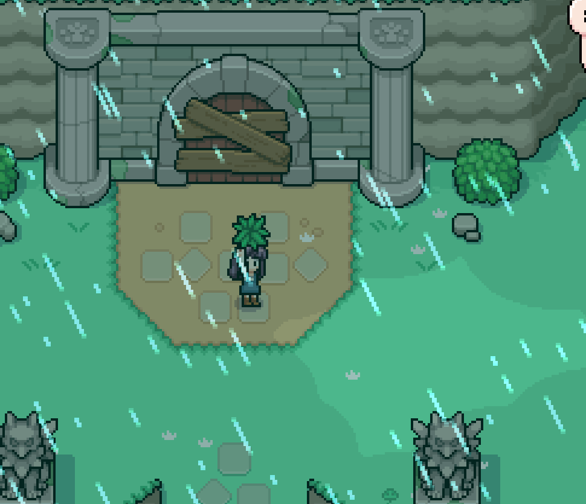
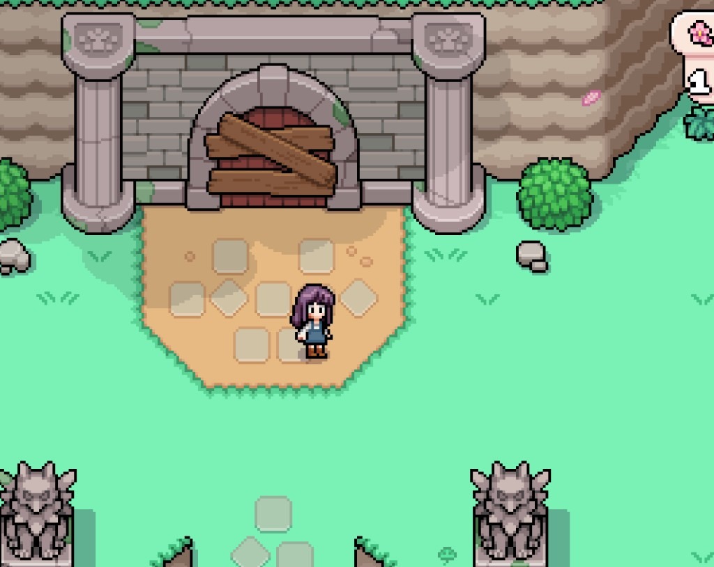
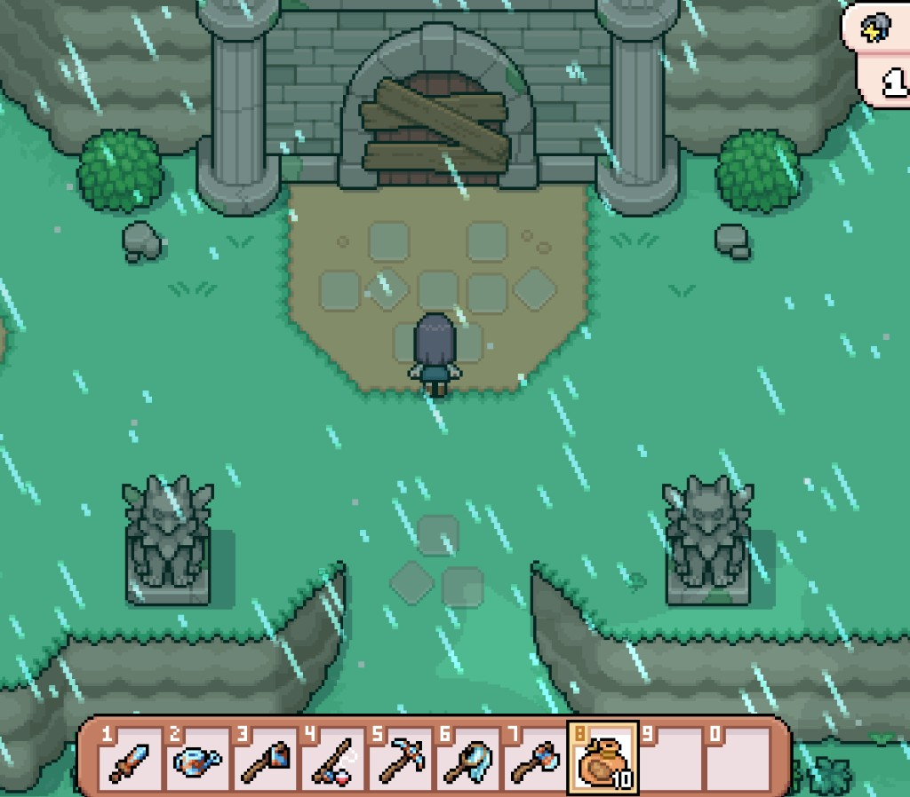
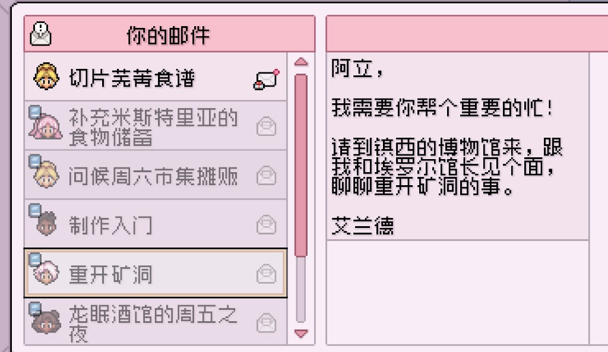

Quick answers
- Check story / town rank if the entrance is boarded.
- Water first, then go with snacks.
- Leave before you faint with a full bag.
- Ore and geodes beat clearing every rock.
- Depth FOMO can wait for better tools.
Boarded entrance
Early on, the mines west of the museum area can stay closed until town progress allows. Read mail and town notices. Do not bash a boarded door for hours.
Short mine day
Pack food. Fight what blocks you. Elevator or exit when yellow. Bring geodes and ores home; trash junk stone if bags fill.
Safe to skip
- Day-two deep pushes on empty stomachs
- Comparing floors to a speedrun
Screenshots from our save
Real Fields of Mistria shots from our first-season play. Captions in English; in-game UI language may differ.




FAQ
Entrance still boarded?
Progress town rank / story. Forage and farm meanwhile.
Passed out once?
Pack snacks next time; leave earlier.
Unofficial fan guide. Not affiliated with NPC Studio. Verify details in your game version.